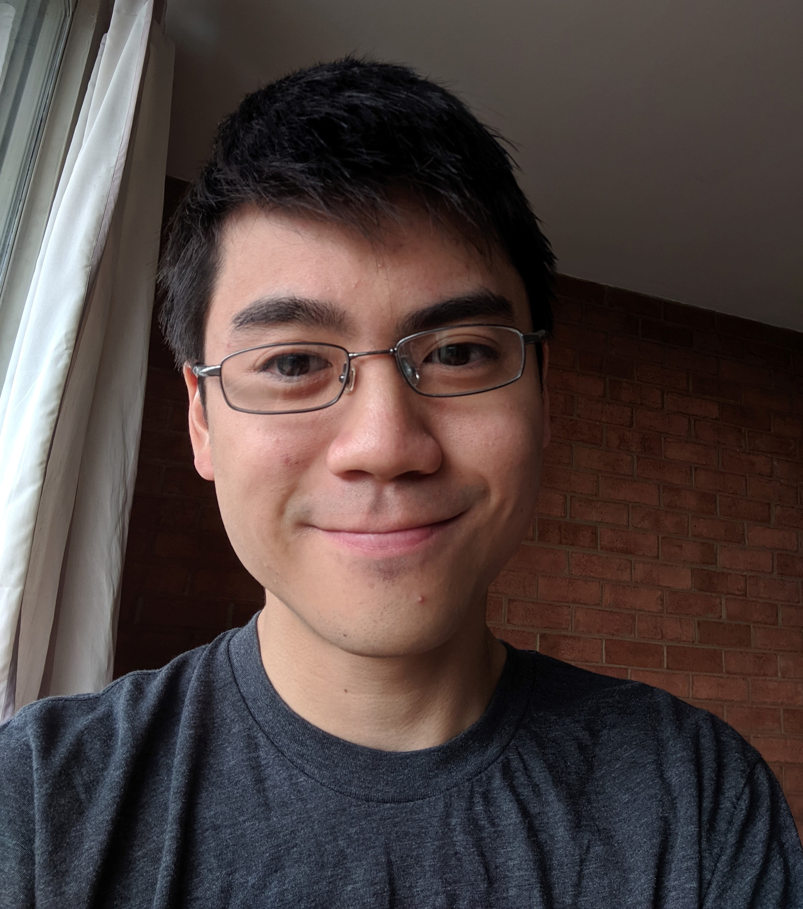

Hi, I'm Aidan!
- I'm a second year PhD student born in Virginia and studying at the University of Virginia.
- I'm happily studying Natural Language Processing advised by Prof. Yangfeng Ji.
- I'm grateful to be fully funded by the Dean's Scholar Fellowship (3 years) and the Distinguished Fellowship.
- I'm currently working on semantic parsing, but I have a strong interest in the interpretability of NLP models. I've also done research in Irony Detection.
- I received my undergraduate degree from the University of Illinois at Urbana-Champaign Magna Cum Laude in Computer Science + Linguistics.

Contact:
Email: aidan.w.san@gmail.comResearch:
Irony Detection Publication (Accepted Paper SemEval 2018)
- 2 Stacked LSTMs (with dropout) for Sarcasm detection (Keras)
- Uses Emoji Embeddings and Sentiment Scores
- Rank 6/31 (F1 score) for subtask B (multitask)
- ACL Anthology
- GitHub
Concept Modeling (CS 546)
- Project to figure out concepts (ie. Addition, Arithmetic, Calculus) from MOOC courses and map their relationships
- Concept Chunker - Uses IOB tagging to determine where multiword concept phrases start and end
- 1 LSTM Hidden Layer (PyTorch)
- Results on MOOC Lecture Dataset (Test): Accuracy: .961, Macro F1: .883
- GitHub
Positions:
Facebook SWE Intern
- Language and Translation Technology Team (Applied Machine Learning Org.)
- Used Python to improve translation data quality
- Attended weekly translation reading group
- Develop new course material about NLP topics
- Logistic Regression, ANNs, Word Embeddings, Dependency Parsing
Cofounder of the UVA NLP Reading Group
- Organize paper presentations
Course Assistant for Datastructures (CS225)
- Hold office hours and answer student questions during lab
- Work on guidebook (website to explain datastructures in a simple way)
- Example Guidebook article (* and & as Operators and Types)